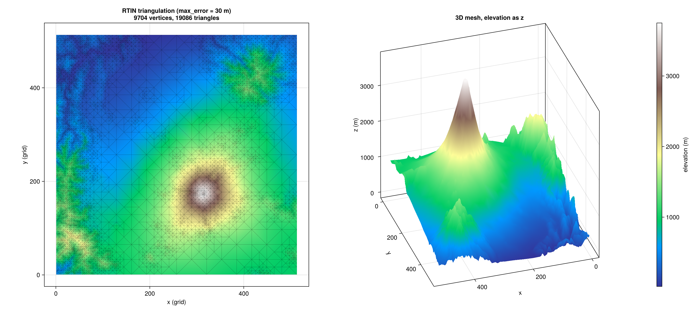

Examples
Fuji terrain mesh
End-to-end: load a Mapbox RGB terrain PNG of Mt. Fuji, build a Martini mesh at a 30 m vertical-error threshold, convert the output directly to a GeometryBasics.Mesh, and plot with CairoMakie.
using Martini, GeometryBasics, CairoMakie
# Decode the Mapbox-encoded RGB terrain into a Float32 heightfield. Re-uses
# the helper from `test/util.jl` so the docs build doesn't duplicate it.
include(joinpath(pkgdir(Martini), "test", "util.jl"))
fixture = joinpath(pkgdir(Martini), "test", "fixtures", "fuji.png")
terrain_flat = mapbox_terrain_to_grid(fixture)
gs = isqrt(length(terrain_flat))
terrain = reshape(terrain_flat, gs, gs)
(grid_size = gs, elevation_range = extrema(terrain))(grid_size = 513, elevation_range = (13.7f0, 3751.0f0))Build the RTIN mesh, requesting Point2{Float32} vertices and GLTriangleFace triangles directly:
m = Mesher(gs)
tile = create_tile(m, terrain)
mesh = get_mesh(tile;
max_error = 30,
point_type = Point2{Float32},
face_type = GLTriangleFace,
)
(vertices = length(mesh.vertices), triangles = length(mesh.triangles))(vertices = 9704, triangles = 19086)Lift the 2D grid vertices into 3D using the terrain elevation, and build two GeometryBasics.Mesh objects (one flat, one extruded) — both via a direct constructor call with no per-element conversion:
elevs = [terrain[Int(v[1]), Int(v[2])] for v in mesh.vertices]
verts3d = [Point3{Float32}(v[1], v[2], e) for (v, e) in zip(mesh.vertices, elevs)]
mesh2d = GeometryBasics.Mesh(mesh.vertices, mesh.triangles)
mesh3d = GeometryBasics.Mesh(verts3d, mesh.triangles)Render the triangulation and the 3D surface side-by-side:
fig = Figure(size = (1600, 720))
ax1 = Axis(fig[1, 1];
aspect = DataAspect(),
title = "RTIN triangulation (max_error = 30 m)\n$(length(mesh.vertices)) vertices, $(length(mesh.triangles)) triangles",
xlabel = "x (grid)", ylabel = "y (grid)",
)
mesh!(ax1, mesh2d; color = elevs, colormap = :terrain, shading = NoShading)
wireframe!(ax1, mesh2d; color = (:black, 0.35), linewidth = 0.25)
ax2 = Axis3(fig[1, 2];
title = "3D mesh, elevation as z",
aspect = :equal,
azimuth = 0.4π,
elevation = 0.18π,
xlabel = "x", ylabel = "y", zlabel = "z (m)",
)
mesh!(ax2, mesh3d; color = elevs, colormap = :terrain, shading = NoShading)
Colorbar(fig[1, 3]; limits = extrema(elevs), colormap = :terrain, label = "elevation (m)")
fig
The left panel shows the RTIN triangulation density adapting to the terrain: small triangles around Fuji's peak and crater rim, large ones over the surrounding flatlands. The right panel is the elevation-lifted 3D mesh with 1:1:1 axis aspect (:equal), so the cone reads at its true geometric ratio against the grid extent.